- 首先点击桌面左下角的开始菜单，然后依次点击“管理工具”-“高级安全windows防火墙”。
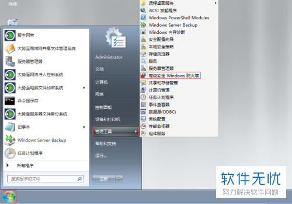 - 出现如下图所示窗口后，点击窗口左侧列的“入站规则”，然后在窗口右侧找到并点击“新建规则”。
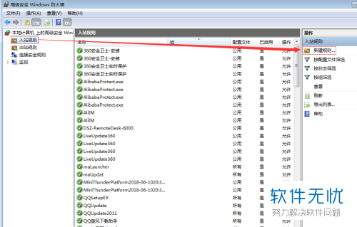 - 出现如下图所示窗口后，将“端口（O）”选中，然后点击“下一步”。
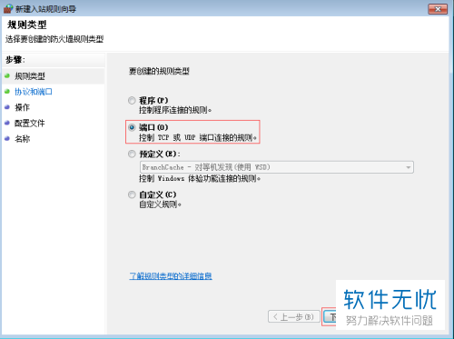 - 如果我们想要将所有端口都禁用，将“TCP”和“所有本地端口”都选中，然后点击“下一步”。
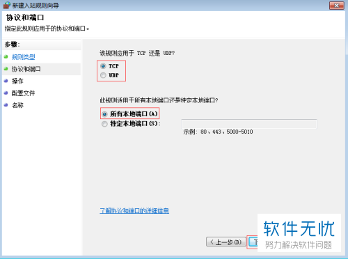 - 如果我们是想要将指定的窗口禁用，先选中“TCP”和“特定本地端口”，然后在“特定本地端口”旁文本框中输入要禁用的端口号，再点击“下一步”。
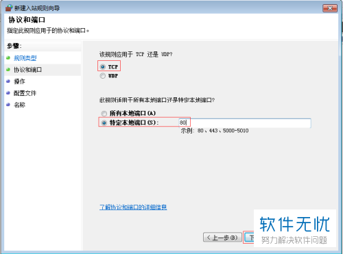 - 接着，在下图所示页面中找到“阻止连接”并选中，然后点击“下一步”。
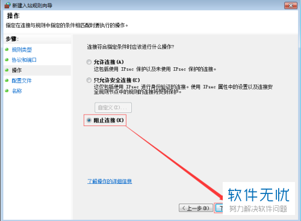 - 出现下图所示页面后，将“域（D）”、“专用（P）”和“公用（U）”这三个选项全都勾选，然后点击“下一步”。
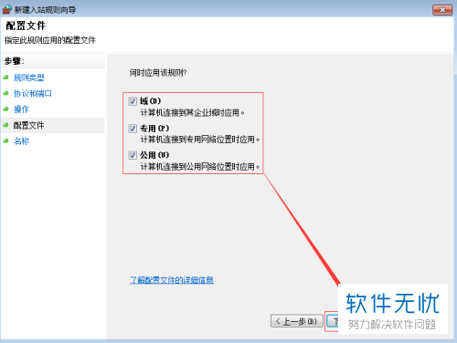 - 出现下图所示页面后，将名称和描述根据自己需要填写即可，填写完点击“完成”。
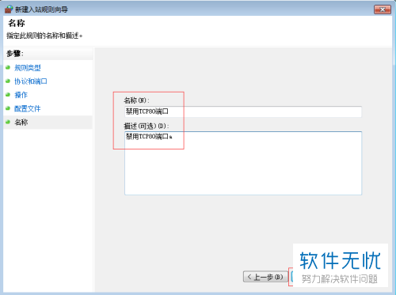
方法二：
- 首先打开浏览器，搜索“文件备份系统”，在官网中下载该文件，然后解压。
- 解压完后，在解压文件中找到并打开下图红框所圈的安装文件。
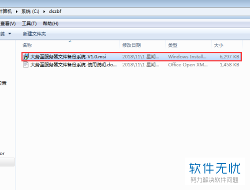 - 根据提示安装完后，返回至电脑桌面，找到并打开该文件，出现下图所示窗口后，在登录用户处输入“admin”，登录密码处输入“123”，然后点击“确定”。
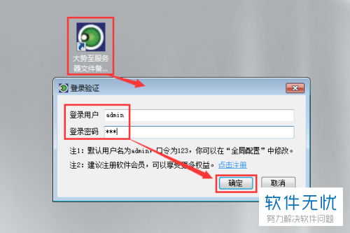 - 进入主界面后，点击页面上端的“安全配置”。
- 出现如下图所示窗口后，找到“系统安全管理”，点击其下的“系统端口管理”。
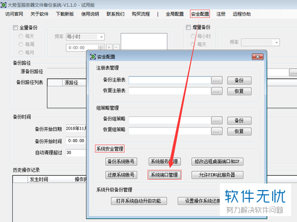 - 接着，在系统端口管理窗口中找到“端口号”，在其旁文本框中输入我们要禁用的端口号。如果我们要禁用某个协议的端口号，找到“访问协议”，将其设置为相应端口号即可。如果我们要禁用所有，就将“访问协议”设置为“所有”。设置完成后，依次点击“添加”-“确定”。
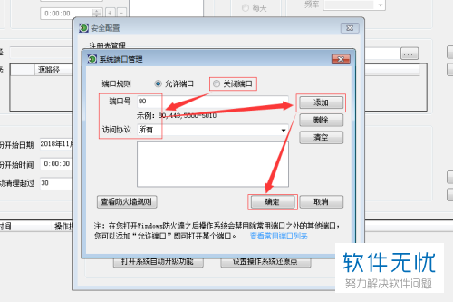 - 同时通过这个系统，服务器文件能被自动备份，还能根据需要设置全备和增备，备份时间能被精细到分秒，非常方便使用。此外，我们还能通过该系统自动清理备份。
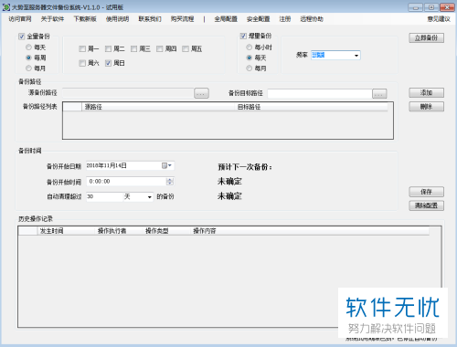